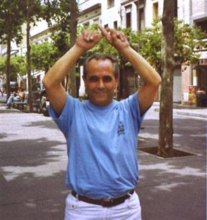

|
|
entrevista publicada al número 483-484 de juliol-Agost 2004
'L'Andreuenc' (pàg. 22 i 23)
"Sant Andreu és a Barcelona
el que Catalunya és a Espanya"
|
PERFIL
|
| En Xavier Gómez i Ribera és tot un personatge a Sant Andreu. Creador i administrador de la pàgina www.sant-andreu.com, comercial d'ofici i andreuenc de cor, se'l sol conèixer com a xagori. Aquesta abreviació de les seves inicials és el nom professional que ha adoptat dins de la xarxa i entre el veïnat, i amb el qual es sent més identificat. Un dels seus trets més definitoris és segurament la seva defensa pel respecte de Sant Andreu com a poble autònom i sobirà, així com la seva lluita constant per reafirmar la identitat andreuenca. |
|
miracles. Un altre cop, les qüestions formals de l'estructura del cementiri no m'importava gaire. En canvi, que ens potinegessin els morts, això sí que no ho podia permetre! I ara, com estàs vivint la problemàtica de les casernes? Veig que portes la samarreta reivindicativa de la campanya Sant Andreu per les Casernes… - Amb l'enrenou pels immigrants, jo no m'hi vaig ficar gaire. Em vaig limitar a informar amb el màxim detall possible des de la web, però ja està. Amb el que sí que m'hi mullaré serà amb el projecte d'equipaments i habitatges públics. M'agradaria que se li donés més aire, més canya a aquest tema. Que els esforços s'apliquessin més a mobilitzar el veïnat i no perdéssim tant el cul negociant amb aquesta gentussa que ens ha enganyat repetidament. L'Hereu encara no s'ha acollonit. |
Una pregunta difícil: quin és el pitjor defecte de Sant Andreu? - Que s'adapta massa, que és massa tou amb els qui l'oprimeixen. Encara que potser per això ha durat més de 1000 anys… I la principal virtud? - Doncs que malgrat els últims 107 anys de mentides i opressió, el sentiment andreuenc ha demostrat que no es perd ni a cops de mall. El teu racó preferit? - La Rambla, perquè de petit hi anava molt a jugar i de gran em vaig implicar molt en aconseguir que ens la tornessin. I ja per acabar, tens esperances de veure el teu somiat Sant Andreu independent? - Home, és clar! A curt termini és evident que no, perquè primer cal arrelar bé el sentiment andreuenc. Però a mitjà-llarg termini, qui sap. Potser amb la reforma de l'Àrea Metropolitana de Barcelona, Sant |
|||
|
Parla'ns de la teva web, Xavi. Quan va sorgir i perquè? - Doncs la pàgina web de Sant Andreu va néixer pels volts de la Festa Major de 1997, encara que la idea em rondava pel cap des de força temps abans. Un dia vaig anar al primer cibercafè que es va instal·lar a Barcelona, que estava a la Gran Via, i em vaig quedar al·lucinat. Si jo des d'aquí podia llegir la carta del dia d'un restaurant de Ciutat de Mèxic, també havia de ser possible donar a conèixer la identitat andreuenca a tot el món. De seguida vaig veure que seria una innovació revolucionària. I em vaig inscriure a un curset de Barcelona Activa per aprendre a fer servir Internet. La veritat és que en un primer moment no m'hi deixaven matricular perquè no havia aprovat el test inicial, però li vaig vendre la moto a l'encarregat, argumentant-li que era un curs per a principiants, i em van admetre. I el temps m'ha donat la raó! Perquè dels 12 o 15 que érem al curset, només dos ens guanyem la vida amb Internet! Al final de curs, s'havia de fer una web per demostrar el que havíem après. I d'aquí va sorgir la idea, perquè la meva pàgina es deia Saint Andrew of the Pigeon's House, és a dir, Sant Andreu del Palomar. |
I actualment quantes hores hi dediques cada dia? - Totes! Totes les estones de les que disposo les inverteixo en la web. Cada dia a les 8 del matí com a mínim ja he actualitzat el temps que farà, la portada i he penjat les notícies referents a Sant Andreu que hagin publicat els principals diaris on-line. A partir d'aleshores em dedico a anar revisant els més de 5000 enllaços que té la pàgina i faig una ullada al Fòrum, perquè ningú no hagi dit cap bestiesa. Ah! I cada dia penjo el resum de l'últim capítol del Cor de la Ciutat! Així doncs, després de tanta feina, quin grau de satisfacció en tens? - Moderadament alt. Encara hi ha molta feina per fer, però estic content. La web rep una mitjana d'entre 20.000 i 25.000 visites al mes i estic satisfet de poder dir que és una web totalment independent de tot i de tothom, perquè es financia únicament del petit i mitjà comerç de Sant Andreu. D'altra banda, considero que ha difós força el sentiment andreuenc i que mica en mica va donant els seus fruits. Fa uns dies, per exemple, el nou president de la U.E. Sant Andreu, Joan Gaspart, no va pronunciar ni un sol cop la paraula "barri" en tot el seu discurs de nomenament! |
Ara permet-nos que canviem de tema. Has estat ficat en un munt de "mogudes urbanístiques" per millorar Sant Andreu des de fa anys i panys. En quina campanya t'hi vas implicar més? - A mi no m'agrada anomenar-ho així. Dels problemes urbanístics ja hi ha qui se'n ocupa i ho fan molt bé, com les associacions de veïns. Jo he participat només aquelles campanyes que lluitaven per la identitat i el respecte del poble andreuenc. Per exemple, a la Comissió Pro-Rambla que va exigir la recuperació de la Rambla de Fabra i Puig de 1984 a 1987, jo hi era perquè no podia consentir que ens prenguessin una cosa que era nostra i a sobre hi tracessin una autopista. Però quan l'Ajuntament es va comprometre a retornar-nos la Rambla, jo vaig marxar de la Comissió, perquè discutir per la forma dels fanals o l'amplada de les voreres m'interessava ben poc. El mateix va passar amb la Comissió Salvem el Cementiri. L'Ajuntament de Barcelona pretenia edificar un tanatori enmig del nostre cementiri, traslladant tombes i enderrocant una petita capella on s'hi guardava "El Santet", un beat andreuenc que segons les llegendes havia fet alguns |

|
|
|
Andreu pugui dir: "Fins aquí hem arribat!". Sant Andreu és a Barcelona
el que Catalunya és a Espanya. I per tant, tard o d'hora s'haurà d'acabar
l'annexió forçosa. Crec que ara seria un bon moment per celebrar el
Segon Congrés de Sant Andreu, un esdeveniment que |
reuneixi a tots els andreuencs i andreuenques, per posar-nos d'acord en els objectius primordials i traçar línies d'acció conjunta. És el moment de deixar de tirar cadascú cap a la seva banda i lluitar junts pel nostre futur com a poble. | |||
|
STAP
ara,
STAP demà estiu 1998 |
Segle
XXI
El Segle de la recuperació de STAP inici del segle XXI |
Benpensants
'barcelonencs' novembre 2001 |
Can
Don Víctor
març 2002 |
'Andreuenins'
abril 2002 |
Comerç
Andreuenc octubre 2002 |
El
meu Poble
juliol 2007 |
|